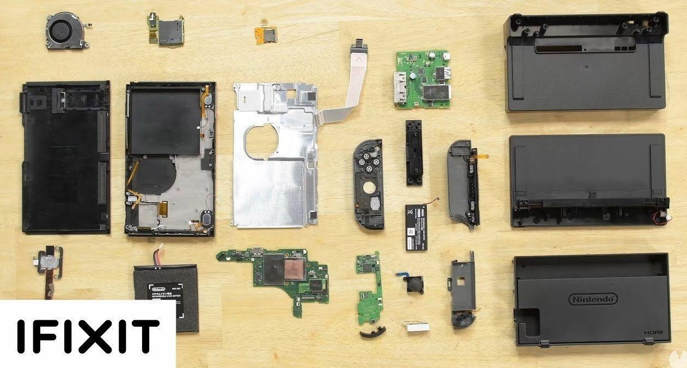
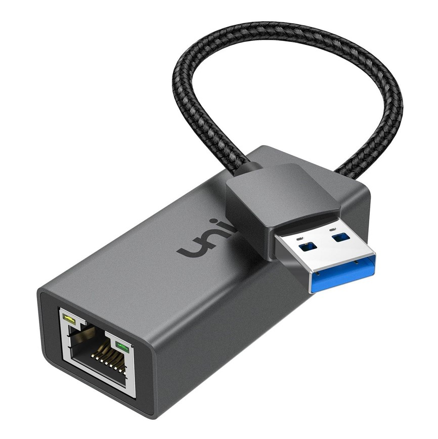

Descripción:
Nintendo, la gigante japonesa de los videojuegos, está preparando el lanzamiento de su próxima consola de nueva generación, la Nintendo Switch 2. Aunque la compañía ha mantenido un silencio oficial sobre el tema, los rumores y las filtraciones han comenzado a dar forma a lo que podemos esperar de este nuevo dispositivo.
Lanzamiento y precio:
Aunque la fecha exacta de lanzamiento aún no se ha confirmado, se espera que la Nintendo Switch 2 llegue al mercado en la segunda mitad de 2024. En cuanto al precio, aunque solo hay especulaciones en este momento, los primeros indicios apuntan a un precio de alrededor de 300 dólares/euros.
Juegos y retrocompatibilidad:
En cuanto a los juegos, podemos esperar ver las franquicias clásicas de Nintendo como 'Super Mario' , 'Pokemon' y 'Zelda' en la nueva consola. Además, se espera que la Nintendo Switch 2 sea completamente retrocompatible, lo que permitirá a los jugadores disfrutar de sus juegos favoritos de la Nintendo Switch original en la nueva consola.
Detalles técnicos:
Según fuentes anónimas, la Nintendo Switch 2 contará con un chip dedicado de Nvidia para reemplazar al Nvidia Tegra X1 que se encuentra en la Nintendo Switch actual. Este cambio podría significar un aumento significativo en la potencia de la nueva consola en comparación con el modelo actual. Además, se espera que la consola llegue al mercado en la segunda mitad de 2024.
La Nintendo Switch 2 también podría tener una pantalla más grande que nunca. Se espera que la pantalla alcance las 8 pulgadas, en comparación con las 7 pulgadas de la OLED y las 6,2 pulgadas de la original.
Aunque todavía hay muchos detalles por confirmar, la Nintendo Switch 2 promete ser un emocionante paso adelante para Nintendo. Con una mayor potencia, una pantalla más grande y la promesa de retrocompatibilidad, la Nintendo Switch 2 podría ser la consola que los fans de Nintendo han estado esperando. ¡Estén atentos para más actualizaciones a medida que se acerca el lanzamiento!
Características de la Nintendo Switch |
|
ConsolaLa consola Nintendo Switch es el núcleo del sistema y contiene la CPU y la GPU. Proporciona la capacidad de jugar tanto en modo portátil como en modo TV. 
|
Joy-ConLos Joy-Con son los controladores desmontables que ofrecen versatilidad en la forma de jugar. Incluyen botones, sensores de movimiento y vibración HD. |
Estación de AcoplamientoLa estación de acoplamiento permite conectar la consola al televisor y cargarla. También proporciona puertos adicionales para periféricos y accesorios. |
PantallaLa pantalla de la Nintendo Switch es una pantalla táctil de 6.2 pulgadas con resolución HD. Permite jugar en modo portátil y también se puede utilizar como pantalla secundaria. |
HardwareEl hardware interno de la Nintendo Switch incluye procesadores personalizados para proporcionar un rendimiento óptimo tanto en modo portátil como en modo TV.  |
ConectividadLa Nintendo Switch ofrece diversas opciones de conectividad, incluyendo Wi-Fi, Bluetooth, y puertos USB-C. Esto facilita la conexión con otros dispositivos y accesorios.  |